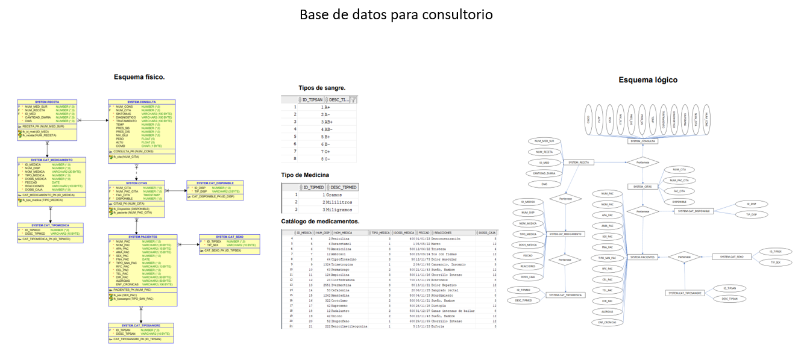

A database was elaborated for a medical office, where it has to be able to carry out normal actions in a pharmacy with a medical office. It includes tables, catalogs, views and alerts.
Developed with:

Evidence:

Code(In Spanish)

Documents and schemes(In Spanish)